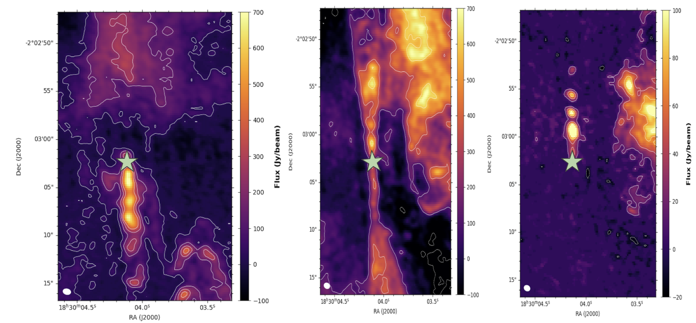
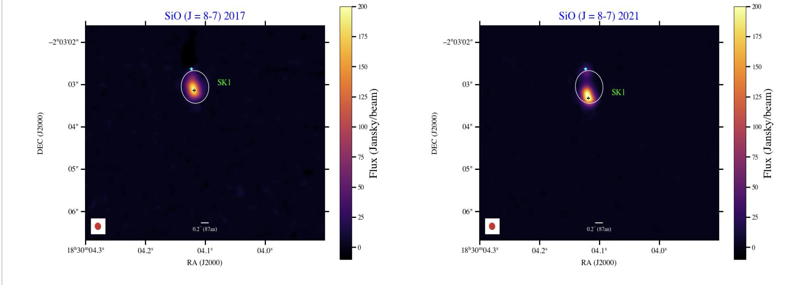

Astronomy Graduate Researcher • Star Formation & Protostellar Outflows
I am a graduate researcher in astronomy studying star formation and protostellar outflows. My research uses astronomical observations to investigate outflow morphology, proper motions, shocks, and the episodic accretion history of young protostars.
I investigate the morphology and proper motions of knots in protostellar outflows to understand their launching history, episodic mass loss, and connection to protostellar accretion.
I combine ALMA and JWST observations to compare shock tracers in young protostellar systems and investigate how different wavelengths reveal the physical structure of protostellar outflows.

Protostellar outflow morphology in Serpens South.

Proper-motion measurements of individual outflow knots.
Kaur, S. & Plunkett, A. (2026) — Episodic Protostellar Outflow: Proper Motion Study in Serpens South (under review)
Email: gsc9zr@virginia.edu
GitHub: kaurs14